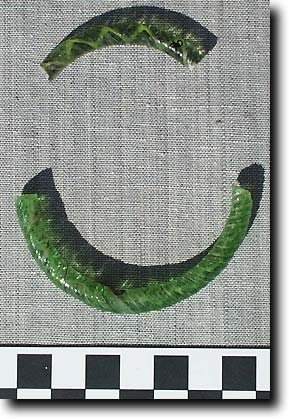
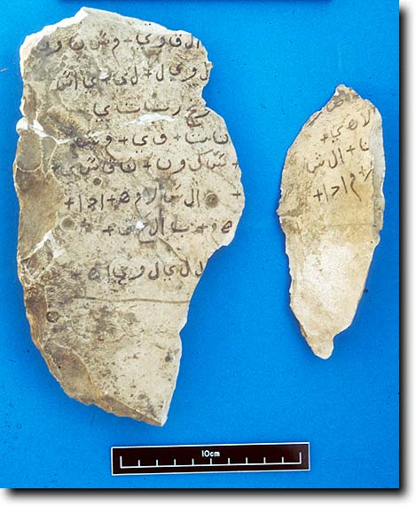
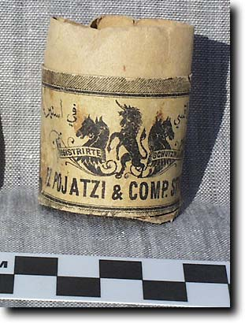
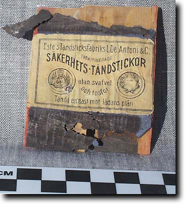

- Home
- Finds home
- Finds by date
- Finds by type
- Conservation
- Slideshow
- Site general
Post-Pharaonic material
Theban tombs do not just contain items from the periods when they were used for burials.
After the use of the tombs in Greek or Roman periods, which is probably when the last burials were made, there is the possibility that they were used by Coptic monks. The evidence is not clear from TT99 as to whether it was indeed used this way, but several tombs in the hill above were so re-employed, and there was a small monastery there. However, many Coptic items were found in the debris of the courtyard, suggesting that at the least the courtyard was used as a dumping area by some people in the past 1000 years, and it is most likely that the material came from nearby. See a page on this site by Heike Behlmer describing this period.
The clearest example of this is the number of Coptic ostraka located. There is also a lot of pottery, and the occasional sealing which is probably of this date (see fourth tab below). 'Ostrakon' is a general term used to describe a flake of stone used as writing or drawing material. It is also extended to cover potsherds used for the same purpose. The Egyptians used ostraka for all sorts of purposes: keeping work records, making sketches of scenes and plans, practising writing, or simply for doodling. At sites such as Deir el-Medina and the Valley of the Kings they have been found in their thousands.
The examples from TT99 are somewhat more modest. See here for pharaonic examples. More examples bear Coptic writing. Below are three examples:
- Coptic ostrakon (ceramic)
- Coptic ostrakon (ceramic)
- Coptic ostrakon (limestone)
- Probable Coptic jar sealing
After AD 642, Egypt came under the control of the expanding Arab empire. While there is not much evidence for this in the tomb material, by the 18th century AD, people were living in the tombs, no doubt encouraged by the ability to make money out of selling antiquities. There is some mediaeval pottery, and a number of fragments of colourful glass bracelets which belong to this relatively 'dark age'. Below are some bracelet fragments and part of an unusual ostrakon bearing an Arabic text. This has been examined by Dr Anne Regourd, and is probably part of a talisman or similar magic artifact, bearing as it does many of the "beautiful names" of Allah.
|

|

|
T hen we come to the late 18th and early 19th centuries. Around this time it would appear that the original village of Qurna, near the present temple of Sety I at the north end of the West Bank site, began to become depopulated, and the inhabitants moved to the rock tombs. This was partially to be more secure from the Turkish rulers of the country, and partly as it put them nearer the sources of antiquities which were beginning to be acquired by foreigners. Thus tombs are found to have cooking areas, stalls for animals, and all the material which goes with human habitation. For example, the adjacent photo shows a cooking emplacement just outside the entrance to TT99.
hen we come to the late 18th and early 19th centuries. Around this time it would appear that the original village of Qurna, near the present temple of Sety I at the north end of the West Bank site, began to become depopulated, and the inhabitants moved to the rock tombs. This was partially to be more secure from the Turkish rulers of the country, and partly as it put them nearer the sources of antiquities which were beginning to be acquired by foreigners. Thus tombs are found to have cooking areas, stalls for animals, and all the material which goes with human habitation. For example, the adjacent photo shows a cooking emplacement just outside the entrance to TT99.
A lot of tomb-robbing went on at about this time, and shafts were emptied in search of objects which could be sold. This probably reached its peak in the 1810s to 1830s, and the number of burials which were ransacked frankly does not bear thinking about. Things slowed down with the establishment of the Antiquities Service in the 1850s, but such things still went on until the early years of the 20th century when most of the inhabitants, including those of TT99, were bought out, and the more elaborate tombs were given locked doors. The following photos show some later 19th century matchboxes which came to light in the excavations.
 |
 |
|
An Austrian matchbox |
A Swedish matchbox |
With the locking of the tombs and the removal of the inhabitants, tomb-robbing on a largish scale died out. It was now incumbent on Egyptologists, Egyptian and foreign, to do something about the preservation and documentation of the tombs.
© Nigel Strudwick 1997-2016